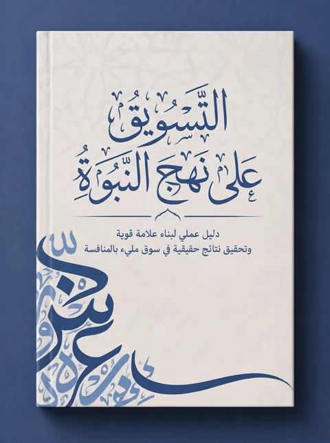

كتاب إلكتروني
التسويق على
نهج النبوة
كيف تسوّق وتبني ثقة عملائك وأنت متمسّك بمبادئك؟
دليل يربط قيم الصدق والأمانة والرحمة والوفاء في السيرة النبوية بقراراتك اليومية في التسويق والتجارة.
٢٩٩ جنيه مصري

- الصيغة
- عدد الصفحات
- ٣١٤
- عدد الفصول
- ١٥
- خطة قراءة
- ١٥ يومًا
التسويق يبدأ من الثقة
لما يكون عندك منتج كويس، لسه قدامك أسئلة مهمة. إزاي توصل قيمته للعميل من غير ضغط؟ وإزاي توازن بين حقك في الربح وحق العميل في قرار واضح؟ وإيه اللي تتعلمه من الرفض والتعثّر؟
الكتاب يربط المواقف والقيم في السيرة النبوية بالتسويق اليوم. هتقرأ عن فهم احتياجات العميل، وعرض المنتج بصدق، والتفاوض بما يحفظ حقوق الطرفين، وبناء علاقة تستمر بعد البيع.
فهرس الكتاب
رحلة في ١٥ فصلًا
كل فصل يربط قيمة من السيرة بموقف عملي في التسويق.
الثقة
كيف تؤسس لعلاقة تجارية تستمر؟
الصدق
كيف تعرض منتجك بوضوح وأمانة؟
فهم العميل
اسمع احتياجات العميل قبل عرض الحل.
الصبر
التعامل مع تأخّر النتائج وتقلّب السوق.
خلق القيمة
ما الذي يجعل منتجك مفيدًا لعميلك؟
التفاوض
اتفاق يحفظ حقوق الطرفين.
بناء المجتمع
ابنِ علاقة تتجاوز لحظة الشراء.
التأثير
أثر الرسالة والسلوك على قرارات الناس.
تجنّب الخداع
أين ينتهي الإقناع ويبدأ التضليل؟
التسعير
العلاقة بين السعر والقيمة وعدل المعاملة.
التوكّل
الأخذ بالأسباب والتوكل على الله.
الفشل
كيف تستفيد من التعثّر والرفض؟
الرحمة
التعامل بإنسانية مع العملاء.
الوفاء
الالتزام بما تعد به قبل البيع وبعده.
العطاء
أثر العطاء في العمل والمجتمع.
الكتاب مناسب لمين؟
لو عندك مشروع صغير أو متوسط، بتبيع أونلاين، أو بتشتغل في التسويق والإعلانات أو العمل الحر، هتلاقي أسئلة وأفكار تقدر تطبّقها على شغلك مع العملاء.
الكتاب بيركّز على المبادئ، ويفيد خصوصًا لو مهتم تربط قراراتك المهنية بالقيم الإسلامية. شرح إعداد الحملات وقوالب الإعلانات موضوعات خارج نطاقه.
إيه اللي جوّه الكتاب؟
١٥ فصلًا في ٣١٤ صفحة بلغة بسيطة. في كل فصل ورشة تطبيقية وسؤال للتأمل يساعدوك تربط الفكرة بشغلك. الآيات والأحاديث الواردة في الكتاب موثّقة بمصادرها.
لو حابب تقرأه على مهل، اختار فصلًا واحدًا كل يوم وسجّل تقدّمك هنا.
خطة قراءة ١٥ يومًا
أكملت ٠ من ١٥ يومًا
احصل على نسختك
كتاب التسويق على نهج النبوة بصيغة PDF، مع ورش تطبيقية وخطة للقراءة.
٢٩٩ جنيه مصري
الدفع والاستلام
- حوّل ٢٩٩ جنيه على رقم فودافون كاش الموضّح أدناه.
- ابعت صورة تأكيد التحويل على واتساب لنفس الرقم.
- هتستلم ملف الكتاب على واتساب بعد تأكيد الدفع.
الأسئلة الشائعة
اسألنا على واتسابهل الكتاب ورقي ولا إلكتروني؟
الكتاب نسخة إلكترونية بصيغة PDF، تُرسل على واتساب بعد تأكيد الدفع.
هل الكتاب مناسب للمبتدئين؟
أيوه، فصوله مكتوبة بلغة بسيطة، ومناسبة لأصحاب المشاريع والمبتدئين والعاملين في التسويق.
هل بيشرح إعداد إعلانات Meta وGoogle؟
الكتاب بيركّز على المبادئ اللي بتوجّه قرارات التسويق، وإعداد الحملات بالتفصيل خارج نطاقه.
هل فيه تطبيقات عملية؟
أيوه، كل فصل فيه ورشة تطبيقية وسؤال للتأمل.
هل الآيات والأحاديث موثّقة؟
أيوه، الكتاب بيوثّق الآيات والأحاديث الواردة فيه بمصادرها.
إزاي أستلم الكتاب؟
حوّل ٢٩٩ جنيه عبر فودافون كاش، وابعت صورة تأكيد التحويل على واتساب. هتستلم ملف الكتاب على نفس المحادثة بعد تأكيد الدفع. راجع خطوات الطلب.
هل فيه خطة للقراءة؟
أيوه، تقدر تقرأ فصلًا كل يوم وتسجّل تقدّمك في خطة الـ١٥ يومًا.
هل فيه رسوم توصيل؟
الكتاب بيتسلّم إلكترونيًا على واتساب، من غير رسوم شحن.